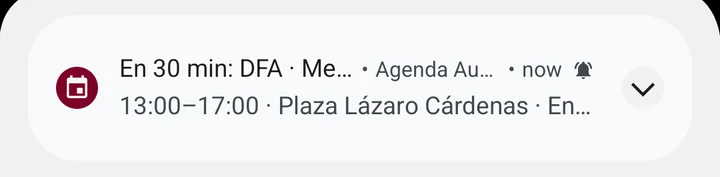

Departamento de Auditorios
Presiona → para comenzar
Departamento de Auditorios
Agenda de Auditorios
La agenda del departamento en el teléfono y en la computadora: eventos, scouting, material y avisos para todo el equipo.
Para qué sirve
Una sola agenda para todo el equipo
- Todos ven lo mismo. Lo que alguien registra aparece en el teléfono de los demás.
- Adiós a las hojas sueltas. Eventos, scoutings, préstamos y notas en un mismo lugar.
- Queda registro. Cada evento guarda quién lo creó y quién lo cambió.
- Te avisa. Llega un aviso antes de cada evento y cuando el equipo hace cambios.
Entrar
Solo tu nombre y tu contraseña
- Escribes tu nombre de pila: Román, Lalo, Laura… sin correos.
- Solo el personal del departamento tiene cuenta.
- La sesión se queda abierta; no la pide cada vez.
- Puedes cambiar tu contraseña en Ajustes.
Pantalla principal
El calendario de la semana
- Hasta arriba, lo que está en curso y cuánto falta para que termine.
- Dos vistas: lista por día o semana por horas.
- Cada lugar tiene su color y puedes filtrar por lugar.
- Lo cancelado se ve tachado; lo que ya pasó, atenuado.
También en la computadora
La misma agenda en el navegador
Se abre desde cualquier computadora, sin instalar nada. Lo que cambias ahí se ve al instante en los teléfonos, y al revés.
bygabomg.github.io/agenda-auditorios/app
Detalle del evento
Todo lo de un evento, en una pantalla
- Lugar, encargado, horario de montaje a término y a qué hora llega el recordatorio.
- Requerimientos con cantidades: Shure 58 ×2, PA ×1…
- Notas con enlaces que se abren: carpetas de Drive o videos de YouTube.
- Historial: quién lo creó, quién lo cambió y qué cambió.
Registrar
Dar de alta un evento en un minuto
- Nombre, encargado, fecha, hora de montaje y hora de término. Así el aviso llega antes del montaje.
- La hora del evento y los detalles van en las notas.
- Lugar de la lista, u Otro escribiendo dónde será.
- Avisa si se empalma con otro evento y dice cuántas piezas hay disponibles.
Scouting
De la cita al evento
- El scouting es la cita donde se revisa qué va a necesitar un evento.
- Puede tener varios días de evento, cada uno con su horario y lugar.
- Esos días aparecen en el calendario como “por confirmar”.
- Con un botón se registran todos los eventos de una vez, ya con requerimientos y notas.
Material prestado
Saber qué salió y cuándo regresa
- Quién se lo lleva, de qué escuela o área, y cuándo lo debe devolver.
- Resumen arriba: activos, vencidos y piezas fuera.
- Al regresar, Marcar devuelto; queda quién lo recibió.
Catálogo de material
El inventario siempre al día
Cuántas piezas hay de cada cosa y cuántas están disponibles ahorita. De aquí salen los requerimientos y los préstamos.
Notas
Los avisos de todos los días
- “Román se llevó las llaves”, “Se dejó abierto el Auditorio B”…
- Cada nota dice quién la escribió y cuándo.
- Las importantes se fijan arriba; los enlaces se abren al tocarlos.
Notificaciones
Lo que pasó, sin perderte nada
- Un apartado con todo lo nuevo, como en Instagram o Gmail.
- Lo no leído se ve resaltado con un punto.
- Al tocarlo te lleva al evento o a las notas y se marca como visto.
- Lo que lees en el teléfono también aparece leído en la computadora.
Avisos en el teléfono
Te enteras al instante
- Cuando alguien agrega una nota o crea, cambia o cancela un evento.
- Recordatorio antes del montaje de cada evento: 30 min por defecto, o lo que elijas.
- En Ajustes decides qué tipo de aviso suena.

Menú y ajustes
Todo a un toque, claro u oscuro
- El menú lateral lleva a Calendario, Notificaciones, Scouting, Material, Catálogo y Notas.
- Cada quien elige su tema: sistema, claro u oscuro.
- En modo oscuro el logo de la Dirección cambia a letras claras.
Confianza
Nada se pierde, todo queda registrado
- Solo entra el personal del departamento, cada quien con su contraseña.
- Eliminar no borra: el evento se oculta y se puede deshacer.
- Cancelar deja el evento visible, tachado, y libera el lugar y el material.
- Cada cambio queda con nombre, fecha y hora.
Cómo funciona por dentro
Dónde vive cada pieza
El teléfono y la computadora no guardan la agenda: la consultan en una base de datos en internet. Por eso todos ven lo mismo.
Cuánto costaría
Lo que vale este sistema
Unas 420 horas de trabajo a $550 la hora, precio de un desarrollador independiente. Con una agencia suele costar más.
al mes para mantenerlo funcionandoUsa los planes gratuitos de Supabase, Firebase, GitHub y Drive.
En qué se va el trabajo
Opcional más adelante: respaldos diarios automáticos con el plan de pago de Supabase (unos $25 USD al mes) y publicar la app en Google Play (pago único de $25 USD).
Para empezar hoy
Cuatro pasos y listo
- Instala la appAbre desde tu teléfono el enlace de Drive y descarga el APK.
- Entra con tu nombreY la contraseña que te dieron. Luego puedes cambiarla.
- Permite las notificacionesLa app lo pide la primera vez que la abres.
- Quita la restricción de bateríaEn Ajustes → Avisos del equipo, para que los avisos no se retrasen.
¿Preguntas?
La agenda ya está funcionando. Lo que vean que falta o que se puede mejorar, díganlo: se ajusta.
Desarrollado por Luis Gabriel Manzano Guadarrama
Soporte y cotizaciones: manzano.guadarrama.luisgabriel@gmail.com